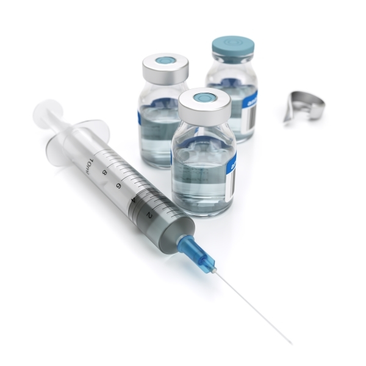

[드물지만 그냥 주사맞는게 싫어서 거부하는 경우도 있긴 하다]
◆ "백신의 위험성을 이유로 백신접종을 거부하는 사람들이 있다."
이렇게만 들으면 의학과 과학에 무지한 집단이라고 생각할지도 모르겠다.
하지만 사실 백신의 위험성은 0%가 아니다. 의학계에서도 질병감염 위험보다 백신접종의 이득이 더 높은 경우에만 백신접종을 권고하고 있다.
의견이 충돌하는 지점은 이 위험과 이득의 저울질인데. 통계적으로는 이득이 상회하기 때문에 백신으로 출시될 수 있었고, 또 일반적으로는 접종을 권고하는것 뿐이다.
◆ 통계의 맹점 "나에게는 적용되지 않는다"
여기서 문제는 전국민을 대상으로 한 통계와 나의 감염 확률은 일치하지 않는다는 점이다. 일치하지 않을 수 있는 정도가 아니라 거의 대부분 일치하지 않는다.
따라서 제법 많은 사람들은 낮은 발병확률에도 불구하고 백신의 위험을 감수하는 결정을 내리게 된다. 게다가 이 발병확률은 개인의 노력(백신을 제외한)으로 낮출 수도 있다. 우리가 뉴스에 귀기울이며 위험지역을 회피하고, 외출을 줄이고, 마스크를 착용하고, 외출 후에 손을 씻는것도 바로 그 노력이다.
스스로의 노력으로 백신의 이득(발병확률)을 줄일 수 있기 때문에 백신접종의 이득을 위험보다 낮게 만들수 있다고 믿는다면 백신접종을 거부할 수도 있는거다. 그리고 정말 발병확률을 충분히 낮춘 개인이 있다면 백신접종은 하지 않는게 옳을지도 모른다.
참조: 2017/05/31, "확률과 통계", 본 블로그
http://lisyoen.egloos.com/11263004
◆ 그럼에도 백신을 권하는 이유 "집단면역"
집단면역, 혹은 군집면역이라는 상태가 있다. 집단 내 다수의 사람들이 면역상태(감염이력, 백신접종 등으로 인한)가 되면 집단에 속한 개인에게 전염병이 발병하더라도 집단으로 퍼져나가지 않아서 사실상 전염성을 잃게 되고, 그 결과 면역이 아닌 개인들도 감염을 예방할 수 있다는 것이다.
백신을 권고하는 의도는 우리 사회를 집단면역상태로 만들려는 목적도 있다. 연령, 임신, 건강상태 등으로 인해 백신접종을 할 수 없는 사람에게는 면역상태의 집단에 속해 있는게 매우 안전할 것이기 때문이다.
따라서 백신접종은 개인의 이득만이 아닌, 사회 전체의 이득까지 고려한 결정이다.
당연히 그 사회에는 나도 포함된다.
참조: "집단면역의 효과, 집단면역이란?", 질병관리본부
http://www.cdc.go.kr/CDC/cms/content/mobile/05/77005_view.html
◆ 결론
그래서 그들을 비난해도 되느냐고?
먼저 그들의 주장과 의학계의 주장을 충분히 살펴보자.
이 글에서 언급한건 일부에 지나지 않는다.
사실 백신거부에는 개인별로 다양한 이유가 있기 때문에 그들이 모두 같은 주장을 한다며 전체집단을 매도하는 것 또한 옳지 않다.
그럼에도 불구하고, 혹시라도 백신의 위험성을 과장하거나, 전염병의 감염/확산 위험을 무시하거나, 비과학적인 대안을 주장하는 경우가 있다면. 이건 비난해도 된다.
이게 내 의견이다.